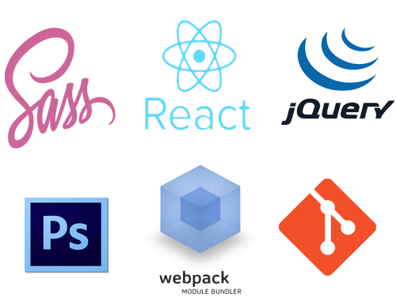
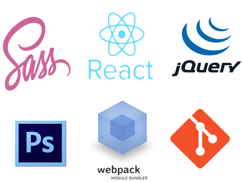

Tak zwane o mnie
Cześć :) Nazywam się Michał Józefowicz i jestem absolwentem kursu programowania Coders Lab w specjalizacji Front-End - edycja wrocławska marzec-maj 2017. Wcześniej, przed kursem, interesowałem się programowaniem webowym na własną rękę (tutoriale i poradniki dostępne w sieci), co przerodziło się do decycji udziału w bootcampie programistycznym. Udział w kursie, dał mi dosyć sporą dawkę wiedzy oraz pomógł ukierunkować się w dalszym rozwoju w tej branży.
W wybranym przeze mnie kierunku, przede wszystkim poszukuję miejsca do rozwoju i zbierania pierwszych zawodowych doświadczeń jako Junior : )
 
